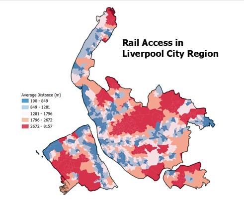
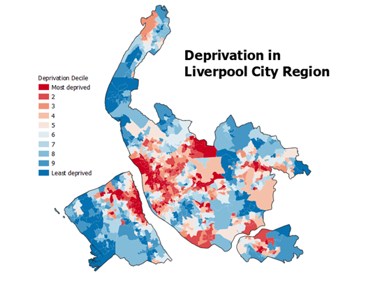
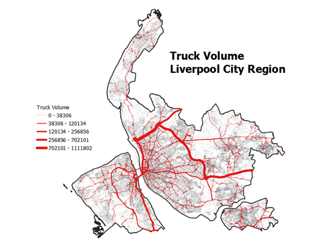

A Month in the Life of a Consultant - May 2023
Liverpool City Region, Liverpool, UK
Liverpool City Region Combined Authority Transport Development Pipeline
I recently completed four weeks of part-time consultancy work for LCR CA around the use of spatial data, indicators and interactive web mapping platforms to facilitate better decision making. This was an exciting opportunity to collaborate with external policymakers to generate positive outcomes for the city region around Transport, Health, Economic Development and Housing.

Liverpool City Region Combined Authority approached Alex and I about doing some freelance consultancy for them on a project to help them secure and utilise funding for a series of projects around the City Region. We discussed their needs and wants in terms of data and outputs, and developed a work specification which covered creation of a series of data products spanning four key domains.
The project comprised two main stages
- Development of indicators and data products
- Representation of indicators and data products on an interactive web mapping platform.
Development of Indicators and Data Products
Bringing together resources from LCRCA, the CDRC and other openly-available datasets, we produced a number of aggregate indices spanning four domains, each based on a series of individual data products.
Domain 1. Access to the Transport Network
We produced an aggregated accessibility score (at LSOA level), which details the overall transport accessibility of the city region. In particular it incorporates measures of:
- Distances to bus stops and railway stations (at postcode level).
- Distances to active travel routes, cycle lanes etc. (at postcode level).
- Average reliability of bus services in local areas.
- Average congestion along the key route network, main roads, motorways etc.
- Accessibility of railway stations, step-free access etc.

Domain 2. Health and Deprivation
We produced an aggregated health/deprivation score (at LSOA level), which details the overall trends in health and deprivation within the city region. In particular, it incorporates measures of:
- Deprivation, IMD rescaled to within the city region.
- Socio-economic status, utilising data from the 2021 census (NS-SEC).
- Devolved programme users.
- Skills bootcamp users.

Domain 3. Economic Development and Housing
We produced an aggregated economic development/housing score (at LSOA level), which details the overall trends in economic development within the city region. In particular, it incorporates measures of:
- Existing households.
- Energy efficiency of households.
- Employment concentration, utilising data on major employer floorspace.
- Innovation, utilising data from the 2021 census.
We also produced a number of other data products, to meet the individual needs of LCRCA, including calculating volume of freight moving through LCRCA road network, locations of freeports and investment locations and total future housing supply.

Acknowledgments
We would first like to thank the team at LCR CA, notably Sam and Libbie, for reaching out to us and for providing the opportunity to engage with the LCR CA. It has been a really positive experience, and in particular has been really interesting to see how some of the ‘day-to-day’ stuff we do in the GDSL can be put to use in the public sector.
Secondly, to all the data providers at LCR CA (and specialists) who have facilitated access to the datasets and resolved any queries we have with them.
Data Availability Statement
Owing to the commercial sensitivity of this project, much of the data used and data products derived are not available for public consumption. Please do get in touch with Dr. Patrick Ballantyne if you are interested in any of the outputs and/or datasets.